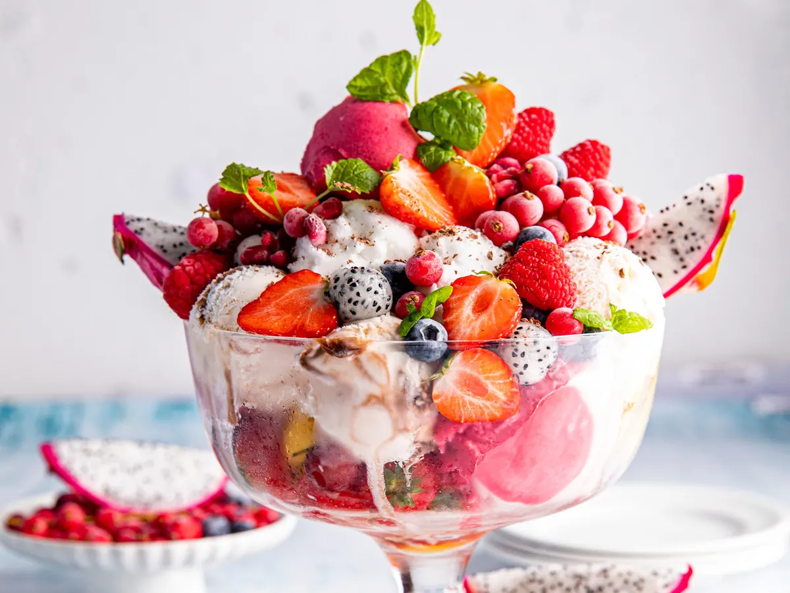
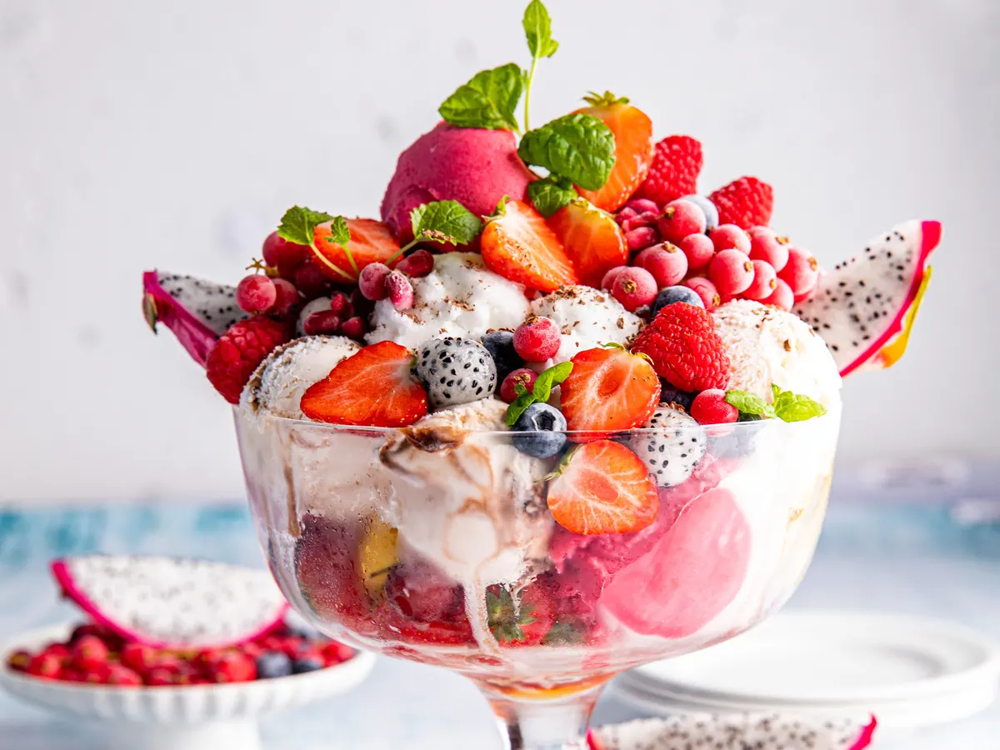
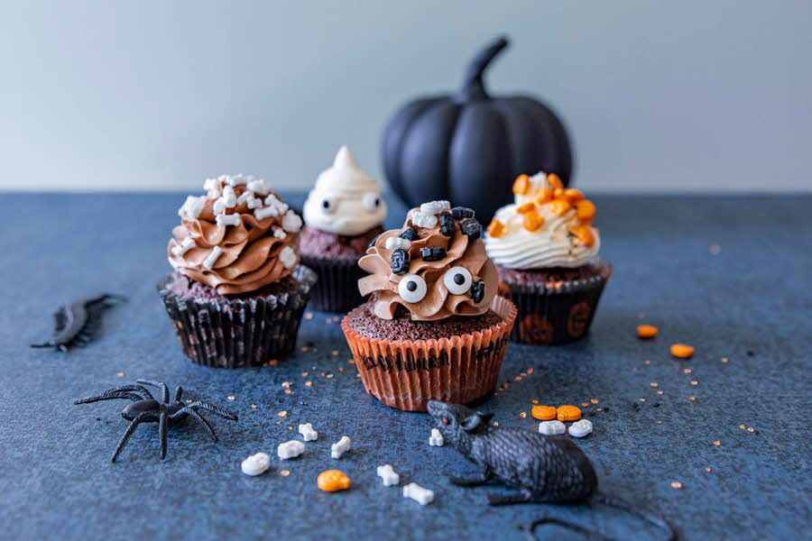
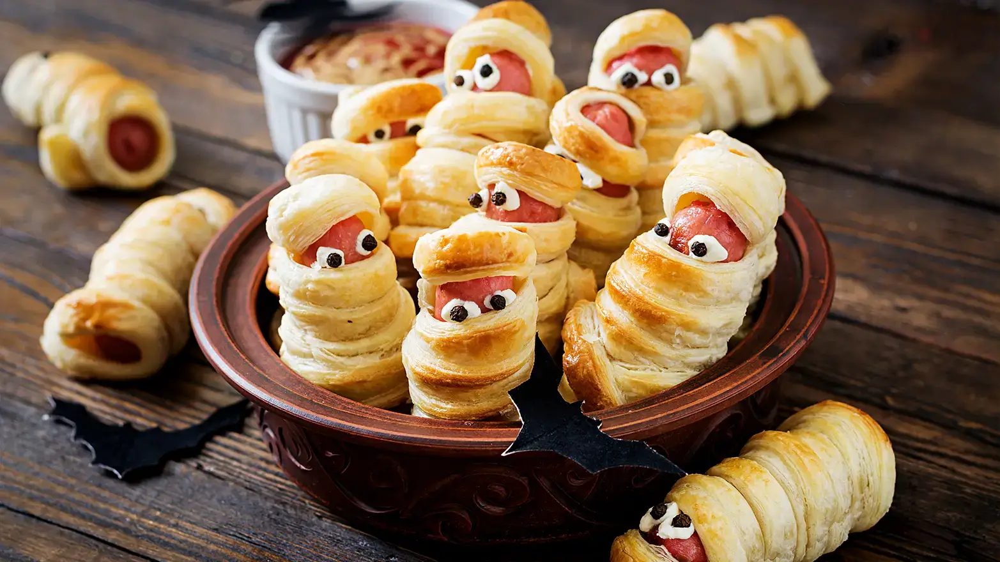
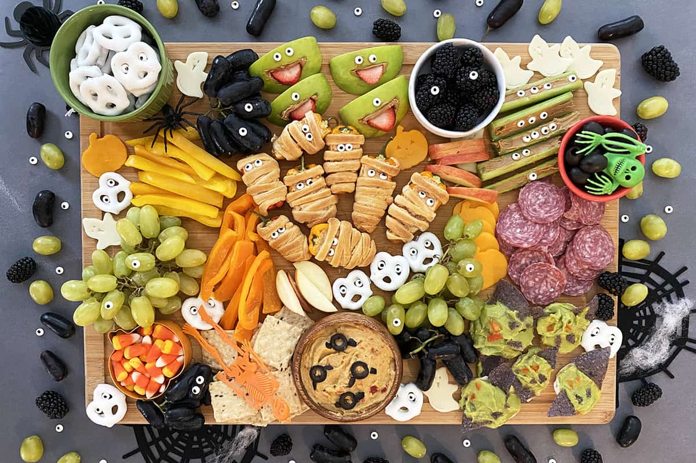

Inspirasjon til høytider
Påske
Påsken er en tid for mye kos med god mat! Her finner du oppskrifter og inspirasjon til hva du kan servere gjestene under høytiden.


17. mai
Uansett om du skal bidra med en rett til frokosten eller om du inviterer til middag – her finner du inspirasjon og de mest populære oppskriftene til 17.mai.
Sommerfest
Koser du deg med maten i sommer? Det har du all grunn til, bare se på all denne deilige sommermaten.
 

Halloween
Halloween, eller allehelgensaften som det også kalles på norsk, feires over hele verden og gjerne med mat og godterier. Her finner du oppskrifter til halloween.
  Juletider
Fyll huset med den stemningsfulle duften av julemat. Vi har samlet oppskrifter og inspirasjon som setter julestemningen og fikser julekosen.


Nyttårs
Ser du etter oppskrifter på nyttårsmat? Her har vi samlet alt fra kalkun, pinnekjøtt og and, til karamellpudding og riskremkake.